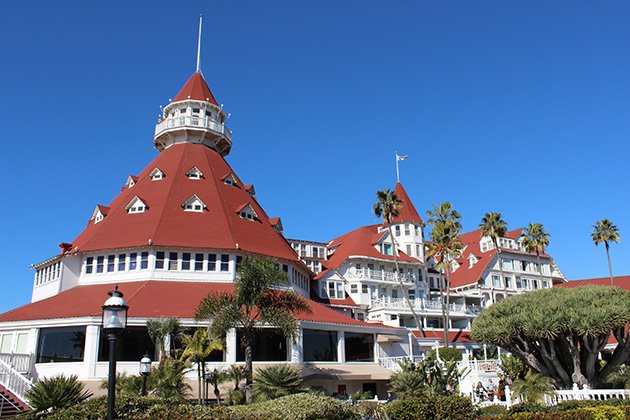

Some Like It Hot
Main Content

Regularly cropping up near the top of Best Comedy of All Time lists (and boasting the best last line ever), the exteriors for Billy Wilder’s classic were filmed in a mere seven days at Coronado Beach near San Diego, standing in for 1920s ‘Florida’.
The ‘Miami’ hotel, where ‘Daphne’ and ‘Josephine’ (Jack Lemmon and Tony Curtis) hide out with Sugar Kane (Marilyn Monroe) and the girl band, is the Hotel Del Coronado, 1500 Orange Avenue.
This 700-room Victorian fantasy, built in 1888, has long been frequented by the rich and famous, including no less than eight US presidents, stage actress Sarah Bernhardt, Charlie Chaplin, and – according to legend – it’s where king-to-be Edward met Mrs Wallis Simpson.
Its other connection with movie history is that this is where Frank L Baum wrote much of The Wizard of Oz, and its fussy Gingerbread appearance is said to have inspired the description of Oz.
So, fittingly, Buddy Ebsen spent a month recuperating here from the effect of breathing in aluminium dust – and considering whether to sue MGM – after starting work as the original Tin Man in the 1939 film.
The Coronado is also the setting for Richard Rush’s brilliant, Oscar-nominated 1980 one-off, The Stunt Man with Steve Railsback and Peter O’Toole.
Visit Info
Visit The Film Locations
California
Visit: California
Visit: San Diego
Flights: San Diego International Airport, 3225 North Harbor Drive, San Diego, CA 92101 (tel: 619.400.2404)
Stay at: the Hotel Del Coronado, 1500 Orange Avenue, Coronado, CA 92118 (tel: 800.468.3533)